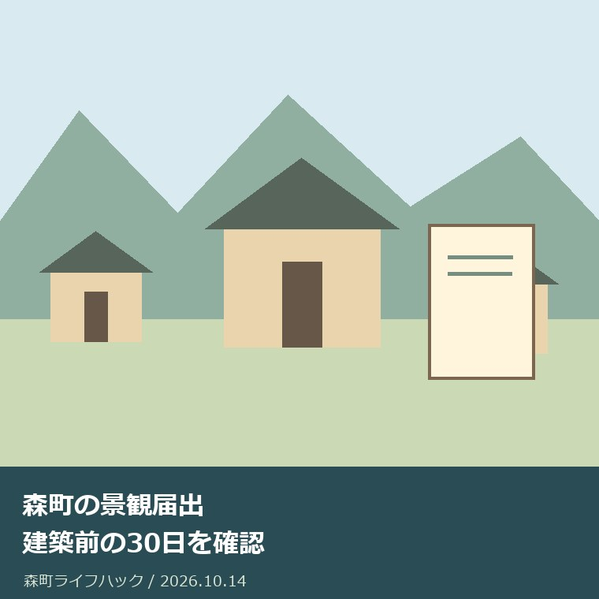
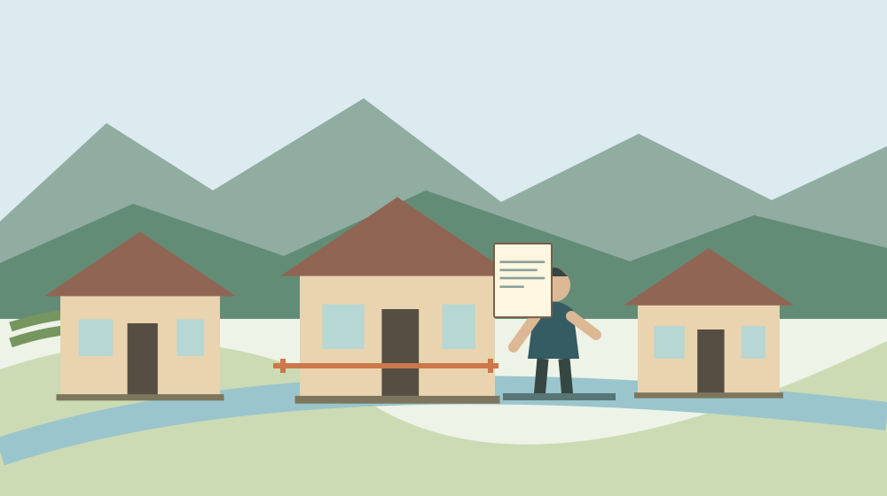

社寺・文化・建築
森町の景観届出｜建築前の30日を確認

Q. 森町で建築や外観変更をするなら、30日前はいつから数える？
A. 森町の景観届出は、一定規模以上の建築等が対象です。町の提出資料では、建築基準法・都市計画法の手続きが必要な場合は申請等の30日前、それ以外は行為着手の30日前までに提出します。正副2部と添付図書が必要です。対象と順序は計画の早い段階で建設課都市計画係へ相談してください。
町並みを守る話を工事の予定へ落とす
森町で建築や外観変更を計画する場合、景観の届出が必要かを工事日程の前に確認します。町並みを保ってきた持ち主や、修繕を繰り返してきた人には、費用と手間が積み重なっています。景観を褒めるだけで、その負担が軽くなるわけではありません。この記事は、手続きの行き違いを防ぐ段取りを扱います。
「工事の30日前に出せばよい」とだけ覚えると、森町の案内を正確に読めません。建築基準法や都市計画法の手続きを要する場合、届出は申請等の30日前が基準です。工事開始日より前に、別の手続きの日程が入ります。起点の違いを家族と設計者が共有しておくことが、今日できる小さな準備です。
大石浩之（磐田市／不動産業）です。私は、街並みを守る立場と、工事費を払う持ち主の事情を分けずに考えたいと思います。ただし個別計画の届出要否をこの記事で判定することはできません。2026年10月14日に町の公式ページと提出資料を確認し、相談へ持っていく情報を整理します。
事実整理｜2023年施行の届出制度
森町公式の「森町景観条例に基づく届出について」は、森町景観計画を2022年9月に策定したと説明しています。届出制度は2023年4月1日に施行されました。公式ページの更新日は2023年3月27日です。2026年10月14日に現行の掲載を確認しましたが、2026年の新しい制度改正として紹介する情報ではありません。
森町の案内は、一定規模以上の建築等について、森町景観条例と景観法第16条に基づく届出が必要としています。「一定規模以上」という条件があるため、すべての修繕で必ず届出が要るとも、小さな工事なら一律に不要とも書けません。対象となる行為、規模、場所を町の資料と個別計画で照合する必要があります。
町のリンク先「届出書の提出について」は、景観計画区域内行為届出書と添付図書を正副2部提出するとしています。申請者が書式だけ書けば準備が終わるものではありません。図面等の添付資料も合わせてそろえる手間があります。持ち主と設計者のどちらが何を作るかを、相談の段階で分けておくと進めやすくなります。
提出資料が示す期限は二通りです。建築基準法・都市計画法の手続きを要する場合は、その申請等の30日前までです。それらの申請等が必要ない行為、例えば資料で挙げられる外観変更等は、行為着手の30日前までです。どちらの工程を起点にするかが、日程表を作る際の分かれ目です。
森町の提出資料は、構想・計画の早い段階での事前相談も案内しています。相談先は建設課都市計画係、公式掲載電話は0538-85-6322です。提出期限が近付いてから様式を探すより、計画の場所と内容を持って相談する方が、必要な資料と工程を早く整理できます。相談したこと自体を正式届出とは扱いません。
変更が生じる場合は様式第3号による事前の変更届出、完了した場合は様式第4号に写真を添付した届出が案内されています。最初に提出して終わりではありません。設計を変更する場面と工事が完了する場面も、持ち主の予定に入れておきます。書類担当が途中で交代するなら、その手順も引き継ぎます。
古い建物を使う際の比較の視点は、森町の古建築活用の比較でも扱いました。今回の対象と混同せず、関心の近い部分を読み合わせられます。

30日前を日程表のどこへ置くか
森町の景観届出で先に決めるべき日程は、必要となる別の申請等があるかによって違います。建築基準法等の手続きがある計画では、工事開始日だけをカレンダーへ書かず、申請等の予定日も置きます。私は、届出日、申請等の日、着手予定日を別の欄にして、設計者と同じ順序を見られる形を勧めます。
申請等の30日前という条件を、工事着手の30日前と取り違えると、書類を出す順序が後ろへずれる可能性があります。正式な日数の計算や、予定日が変わった際の扱いは担当係へ確認します。この記事の説明だけで締切日を確定せず、町への相談で確認した日を日程表に記入してください。
申請等が不要な外観変更の計画では、行為着手の日を先に整理します。ただし建築確認等が不要だから、景観届出も不要になるとは限りません。別の手続きが不要という条件と、景観届出の対象であるかという判定は別です。工事の種類と規模を伝え、対象に入るかを町へ確認する順序を残します。
予定表には、見積り、設計の調整、家族の費用承認、正式届出、申請等、工事、完了届出を分けて書けます。すべてが同じ人の仕事とは限りません。町が示す法的な期限と、家族が資料を探すための時間も区別します。私の提案する日程表は公式様式ではなく、持ち主側の抜けを減らす補助のメモです。
期限のぎりぎりへ資料準備を寄せると、図面や仕様に不足があった場合、調整の余地が少なくなります。私は、余裕のある日程を設計者と相談したいと考えます。町の受理や判断の時期をこの記事で保証することはできません。書類を出した日だけで、予定どおり工事を始められると決めつけないでください。
森町の建築と暮らしへの影響
森町の景観に関わる工事は、持ち主にとって建物の使い方や家計の問題でもあります。私は、外観を維持してほしいという言葉だけでは修繕費を用意できないと考えます。必要な安全性、使いやすさ、景観への配慮を、計画段階で一緒に相談する方が、完成後に調整するより判断材料をそろえやすくなります。
古い家を残して使う計画なら、傷みの調査と外観の変更を同じものとして扱わないことです。建物の状態は現地調査が要る話であり、景観の資料だけで安全性は分かりません。修繕する場所と外から見える変更点を設計者へ渡し、景観の相談で必要な部分を絞ります。写真も撮影位置と日付を付けると使えます。
森町公式の「森町の神社建築」は、町内の建築の歴史を知る入口です。ただし社殿の歴史を読んだことから、一般の住宅に同じ外観を要求することはできません。文化的な背景を理解する資料と、個別工事の届出資料は役割が異なります。町並みへの関心が強いほど、その境界を丁寧に分けたいと思います。
文化庁は毎年11月1日から7日までを文化財保護強調週間と案内しています。秋に建物や町並みを見直すきっかけにはなりますが、森町の景観届出の期限や対象を変更する週間ではありません。2026年の町独自の関連行事も確認していません。文化に親しむ時期と、工事の法的な段取りを混同しないでください。
関連する材料として、森町の用途地域の記事があります。調べる対象と、資料が答えられる範囲を分けると、家族の記録にも根拠を残せます。
良い点｜早い相談と提出後の手順がある
森町の景観届出の良い点は、構想・計画の早い段階の相談を公式資料で案内していることです。私は、仕上がった図面を持ってから問題に気付くより、まだ変更できる段階で相談できる入口を評価します。持ち主だけで判断を抱えず、設計者と担当係が確認すべき点を分けられるのは実務上の利点です。
期限を二つのケースに分けて示す点も助かります。工事日だけを基準にせず、建築基準法や都市計画法の申請等との順序を考えられます。私は、景観を別枠の用事として後から足すより、設計の工程へ最初から置ける説明だと捉えます。手続きのつながりが分かれば、家族と業者の予定も合わせやすくなります。
変更と完了について様式が示されているため、提出後にも残る仕事が見えます。工事途中の変更を設計者だけの話にせず、持ち主も届出への影響を確かめられます。完了写真の準備まで予定しておけば、工事が終わってから撮り直しを考える負担も減らせます。工程の終わりを知れることは持ち主側にも利益があります。
正副2部と添付図書を求める説明は、資料を一つのセットとして準備する基準になります。私は、書類を家族の手元にも整理しておくと、後から変更の経緯を追いやすいと考えます。届出した図面と施工後の記録を区別すれば、将来の修繕相談で、どの時点の計画を見ているかという混乱を抑えられます。
注文したい点｜30日前だけでは動けない
森町の景観届出は、30日前という数字だけを覚えても準備が完結しません。対象となる規模や行為、計画の場所、添付図書の内容を合わせて確認する必要があります。私は、持ち主が自分の工事を例に質問できる案内があると助かると考えます。この記事も対象規模を一律の数値で代用せず、個別確認への入口に留めます。
届出の対象判定が分からないまま、業者に「必要な書類は任せる」とだけ伝えると、景観の相談がどこまで含まれるか曖昧になります。私の注文は、誰が対象を確認し、誰が図書を用意するかを契約や打合せで見える形にすることです。町へ責任を押し付けるのでも、持ち主へ全作業を戻すのでもなく、役割を明確にします。
景観届出をしたことから、建築、道路、境界、文化財など別の確認まで済んだとは判断できません。建物の所在地が同じでも、担当する問題が違います。私は、相談先と回答を分けて残すよう提案します。各確認の対象を明確にすれば、他の手続きの完了を誤って思い込む場面を減らせます。
私は、文化を残すための外観の配慮と、家族が支払える修繕の内容をどう合わせるかで迷います。どちらか一方だけを正解にできません。個別建物の費用を確認していないので、安く済むとも断言できません。だからこそ早い相談で、何が条件で、どこに変更の余地があるのかを知ることを先に置きます。
対案・結論｜計画の一枚を持って相談する
森町で建築や外観変更を計画する持ち主が今日できることは、所在地と工事の概要を一枚にして建設課都市計画係へ相談することです。公式掲載電話は0538-85-6322です。工事名だけでなく、新築か外観変更か、予定している範囲、規模、申請等と着手の予定を伝えます。未定の項目は未定と書けます。
最初のメモには、持ち主の連絡先と設計者の有無も残します。外観写真がある場合は、建物のどの面か分かる説明を付けます。詳細図面がまだない段階でも、町の案内する事前相談の方法を聞くことはできます。資料がないために相談を遅らせる前に、相談に必要な情報を担当係へ確認してください。
質問は、届出対象に当たるか、期限の起点は申請等か着手か、必要な添付図書は何かという順で整理します。計画が変わる場合の連絡方法と完了届出も確認事項に入れます。回答を一度に覚えようとせず、各項目の確認日をメモします。これは町の正式な判断を代行する表ではなく、持ち主が次の仕事を把握するための表です。
設計者との打合せでは、町へ確認した対象と日程を共有します。図面の版、外観の色や材料、変更した日を区別すると、正式届出の資料と別の案が混ざりにくくなります。私は、見積りを取る段階でも、どの案を前提にしているかを揃えたいと考えます。金額だけを比較する前に、同じ工事内容か確かめるためです。
家族の費用承認が必要なら、その回答を待つ時間も予定に入れます。法的な期限を満たすことと、家族内の合意が済むことは別です。工事の契約や着手を急ぐ前に、届出の順序と予算の判断を揃えます。今日、仕様をすべて決める必要はありません。対象と次の確認先が分かれば、計画は一歩進みます。
家族に残す記録｜変更と完了まで追える形
森町の景観届出の記録には、所在地、工事概要、対象の確認結果、相談日、正式な提出日、申請等と着手の予定を分けます。家族が後から見る場合にも、相談だけなのか提出済みなのかが分かる形です。正式資料の控えを保管する場所と、担当する人を一つに決め、原本の所在を探し直す負担を減らせます。
計画が変更されたら、元の案を消して上書きするより、変更前と変更後の版を残す方法があります。変更内容の事前届出が必要という町の案内と、実際の工事変更を照合するためです。変更届出の扱いは担当係へ確認します。色や材料の相談を口頭だけで済ませず、最終的にどの内容が確認されたか記録します。
完了時は、町が案内する様式第4号と写真の準備を担当する人を決めます。写真をいつどこから撮るかは必要条件を確認してから考えます。家族の記録には、工事を終えた日と完了の届出日を別々に残せます。見た目が完成したことと、必要な手続きが終わったことを区別するためです。
家の将来の利用が未定でも、工事記録は残す価値があります。売却や賃貸の結論を先に出す必要はありません。道路、境界、名義、修繕履歴は別資料として整理し、景観届出がそれらの判断まで保証する書類ではないと分かるようにします。専門的な個別判断は、設計者や関係する専門家へ渡す領域です。
調べる対象を広げる場合は、森町の神社建築も参考になります。資料が扱う年代や範囲を読み、この記事の未確認事項を推測で埋めないよう、それぞれの公式出典へ戻って確かめてください。
大石の視点｜美しい町並みの裏の工程を見る
私は、景観を守るという言葉を、持ち主の工程と支出へ翻訳して考えます。これは私の意見であり、特定の届出相談を再現した体験ではありません。名義や図面を探す人、設計を調整する人、費用を払う人の動きが揃わなければ、計画は止まります。町並みを支える負担を認めるなら、その工程を具体的に見る必要があります。
30日前の起点は、工事内容と別の申請等によって確かめる。私はこの順序を先に置きます。早い相談は、持ち主の自由を奪うためではなく、変更できる段階で条件を知るためのものだと考えます。対象か分からないまま悩み続けるより、所在地と概要を一枚にして担当係に渡す方が判断材料は増えます。
森町の町並みに可能性を感じても、個々の家が無理なく修繕されなければ続きません。私の商売から言えるのは、工事の手戻りを減らす準備が家族の負担に効くということです。届出制度の存在を紹介するだけで終えず、誰が資料を揃え、どの日を基準にするかまで落として初めて、暮らしに使える案内になります。
今日の結論は、工事予定を確定する前に、景観届出の対象と提出順序を町へ相談することです。2023年施行の制度と、2026年10月14日に確認した掲載条件を分けて記録します。文化への関心を具体的な段取りへ変えるなら、まず所在地、工事内容、予定日の一枚から始めてください。
よくある質問
建築確認が不要なら景観届出も不要ですか？
建築基準法等の申請が不要であることと、森町の景観届出の対象かどうかは別です。町は一定規模以上の建築等を対象とし、申請等が不要な外観変更等では着手の30日前までの提出を案内しています。所在地、行為の内容、規模を建設課都市計画係へ伝え、計画の早い段階で対象を確認してください。
30日前は工事開始日の30日前ですか？
森町の提出資料では、建築基準法・都市計画法の手続きを要する場合は申請等の30日前まで、それ以外は行為着手の30日前までです。すべてを工事開始日から数える説明ではありません。申請等と着手の予定を分け、どちらを起点にするかと正式な期限の計算を担当係へ確認してから日程を確定してください。
最初の届出後に計画が変わったらどうしますか？
森町の提出資料は、変更時に様式第3号と変更に係る添付図書による事前届出を案内しています。完了時には様式第4号に写真を添付します。変更の扱いを持ち主だけで判断せず、内容と時期を建設課都市計画係へ確認してください。元の図面、変更後の版、相談日、提出日を分けて保管すると経緯を追えます。
公式情報源
2026年10月確認（確認日：2026年10月14日）。制度・数値・公開条件は変わる場合があります。個別の利用は各担当先へ、建築・税務・登記・相続等の判断は専門家へ確認してください。
- 森町：森町景観条例に基づく届出について（2026年10月14日確認）
- 森町：届出書の提出について（2026年10月14日確認）
- 森町：森町の神社建築（2026年10月14日確認）
- 文化庁：文化財保護強調週間（2026年10月14日確認）